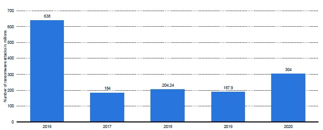

Wenn Ihr Unternehmen in den letzten 12 Monaten Opfer von Ransomware-Angriffen geworden ist,
hat ihr Unternehmen ein Lösegeld
(unter Verwendung von Bitcoin oder einer anderen anonymen Währung) gezahlt, um Daten
wiederherzustellen!

Dieses Balkendiagramm veranschaulicht die jährliche Anzahl weltweiter Ransomware-Angriffe in den
Jahren 2016 bis 2020.
Die X-Achse steht für das Jahr, die Y-Achse für die Anzahl der Ransomware-Angriffe (angegeben in
Millionen).
Aus den dargestellten Daten geht hervor, dass die Zahl der Ransomware-Angriffe von 638 Millionen im
Jahr 2016 auf 184 Millionen im Jahr 2017 extrem zurückgegangen ist.
Die Zahlen der Ransomware-Angriffe in den Jahren 2018 (204,24 Millionen) und 2019 (187,9 Millionen)
sind relativ stabil, aber mit 304 Millionen Angriffen im Jahr 2020 können wir einen klaren und
besorgniserregenden Aufwärtstrend der jährlichen Ransomware-Angriffe erkennen.